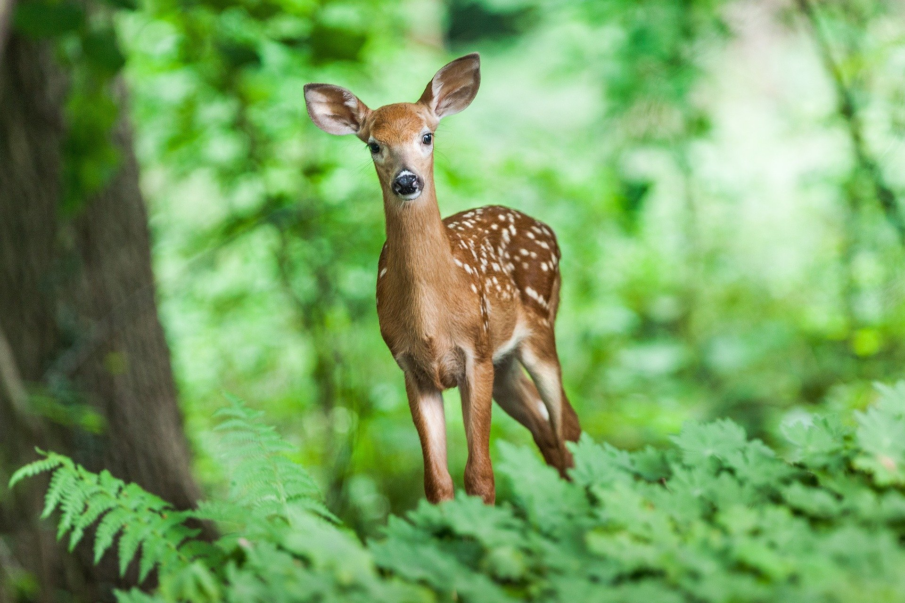
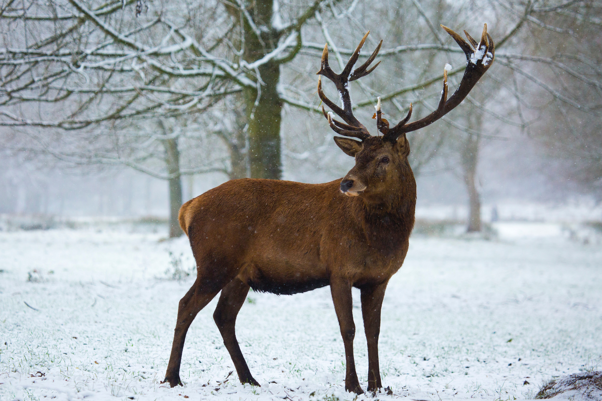
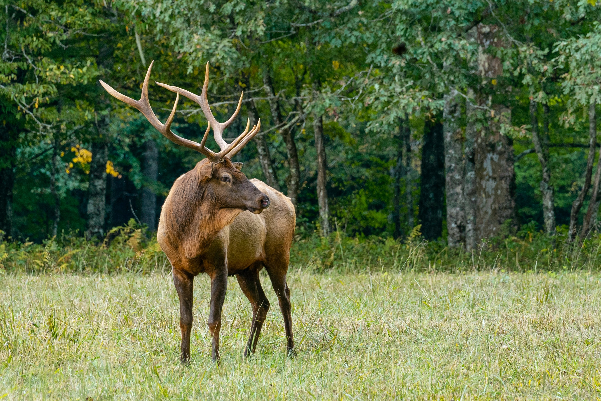

사슴
사슴과의 동물은 분포가 대단히 넓어서 구세계에 있어서는 북극으로부터 시작하여
남쪽으로는 아프리카 북서부까지, 신세계(新世界)에 있어서는 남북대륙 어디서나 살고 있다.
현재까지 알려져 있는 사슴과는 2아과(亞科)로 나뉘며, 사향사슴과는 1속(屬) 4아종(亞種)으로,
사슴아과는 14속 184종(種)·아종이나 된다.
Characteristic
몸의 크기는 대·중·소로 여러 가지가 있으며, 제일 큰 것은 말만큼이나 큰 종류(대륙사슴)도 있고,
제일 작은 것은 큰 개만한 고라니 따위도 있다.
뿔은 일반적으로 수컷만이 가지고 있기도 하고 암수 다 갖고 있지 않기도 하다.
뿔은 뺨뼈[額骨]로부터 생기며 골질중실(骨質中實)에서 분기성(分岐性)임과 동시에 탈락성(脫落性)이다.
Life
사회생활을 좋아하고 겨울에는 때때로 무리를 이룬다. 봄이 되어 따뜻한 시기가 가까워지면 해체하여 수컷들은 다음 겨울이 될 때까지 고독한 생활을 하나, 어미와 어린 새끼들은 그대로 군집을 유지하며 생활한다. 교미시기는 9월 초순에서 10월 초순 사이이며, 5, 6월경에 한 마리의 새끼를 낳는다.
Symbol
사슴의 뿔은 녹용(鹿茸)이라 하여 귀한 한약재로 취급되고 있다.
녹용은 새로 돋아난 사슴의 뿔을 가리키는 것으로 혈관이 많고 외면은 부드러운 잔털로 덮여 있다.
보통 석회질과 콜라겐으로 이루어진 골질(骨質)이다.
이와 같이 유연하던 뿔은 5, 6월을 지나면서 점차 굳어지고, 혈관도 줄어들고,
부드러운 잔털도 없어져서 마침내 단단한 각질이 된다.
이 각질의 뿔은 다음해 봄에 떨어지고 새로운 뿔이 돋게 된다.
[출처: 한국민족문화대백과사전(사슴)]
Gallery
- 
- 


- 